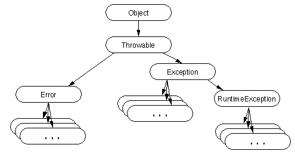

|
|
Handling Errors using Exceptions |
As you learned on the previous page, you can only throw objects that derive from the Throwable class. This includes direct descendents (that is, objects that derive directly from the Throwable class) as well as indirect descendents (objects that derive from children or grandchildren of the Throwable class).This diagram illustrates the class hierarchy of the Throwable class and its significant subclasses.

As you can see from the diagram, Throwable has two direct descendants: Error and Exception.
Errors
When a dynamic linking failure or some other "hard" failure in the virtual machine occurs, the virtual machine throws an Error. Typical Java programs should not catch Errors. In addition, it's unlikely that typical Java programs will ever throw Errors either.Exceptions
Most programs throw and catch objects that derive from the Exception class. Exceptions indicate that a problem occurred but that problem is not a serious systemic problem. Most programs you write will throw and catch Exceptions.The Exception class has many descendents defined in the Java packages which indicate various types of exceptions that can occur. For example, IllegalAccessException signals that a particular method coult not be found, and InstantiationException indicates that a program attempted to instantiate an abstract class or an interface.
One Exception subclass has special meaning in the Java language and deserves mention here: RuntimeException.
RuntimeExceptions
The RuntimeException class represents exceptions that occur within the Java virtual machine (during runtime). An example of a runtime exception is NullPointerException which occurs when a method tries to access a member of an object through a null reference. A NullPointerException can occur anywhere a program tries to dereference a reference to an object, and the cost of checking for the exception often outweighs the benefit of catching it.Because runtime exceptions are so ubiquitous and attempting to catch or declare all of them all the time would be a fruitless exercise and a fruitful source of unreadable and unmaintainable code, the compiler allows runtime exceptions to go uncaught and undeclared.
The Java packages define several RuntimeException classes. You can catch these exceptions just like other exceptions. However, a method is not required to declare that it throws RuntimeExceptions. In addition, you can create your own RuntimeException subclasses. Runtime Exceptions--The Controversy contains a thorough discussion about when and how to use runtime exceptions.
|
|
Handling Errors using Exceptions |